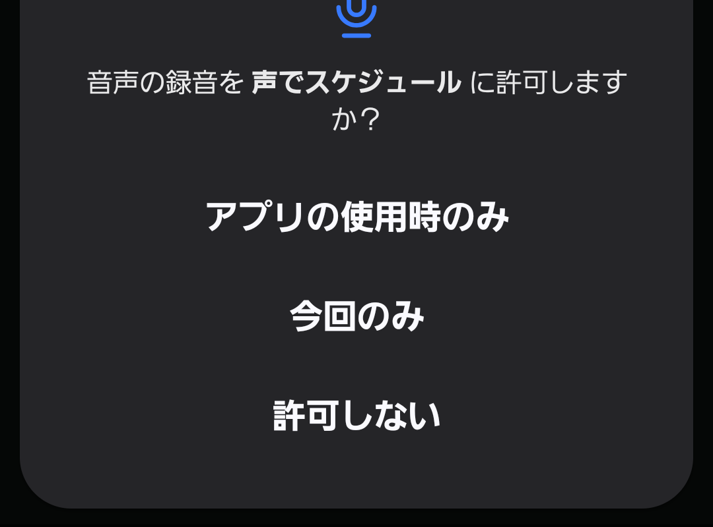
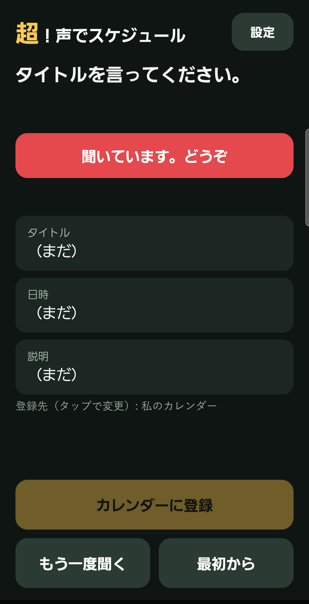
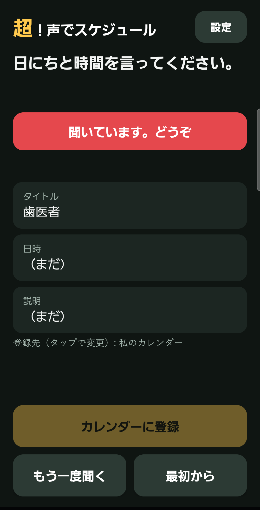
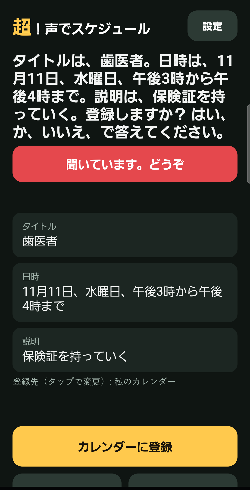
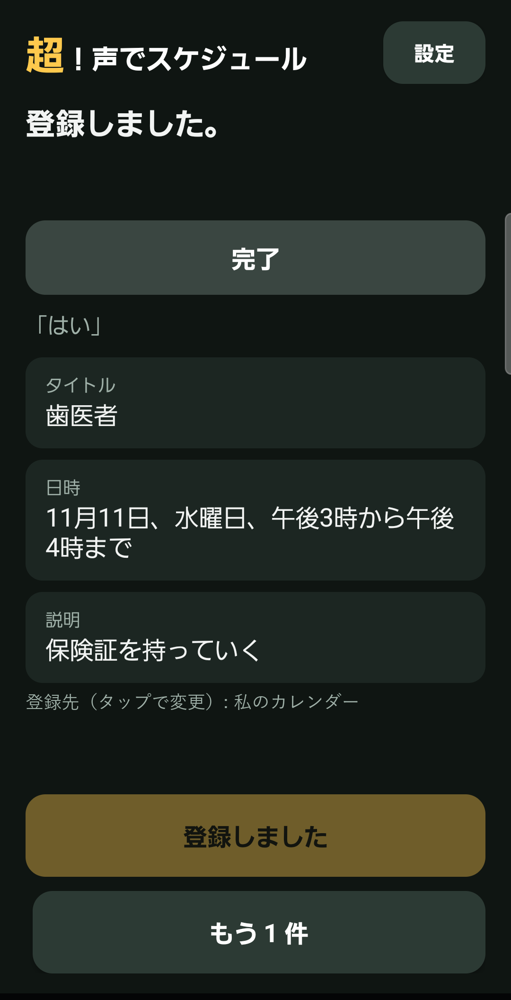
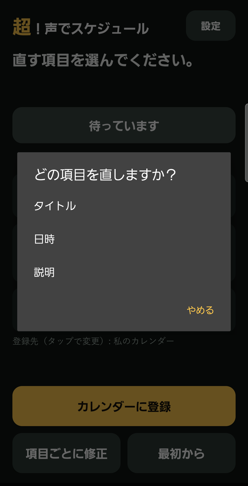
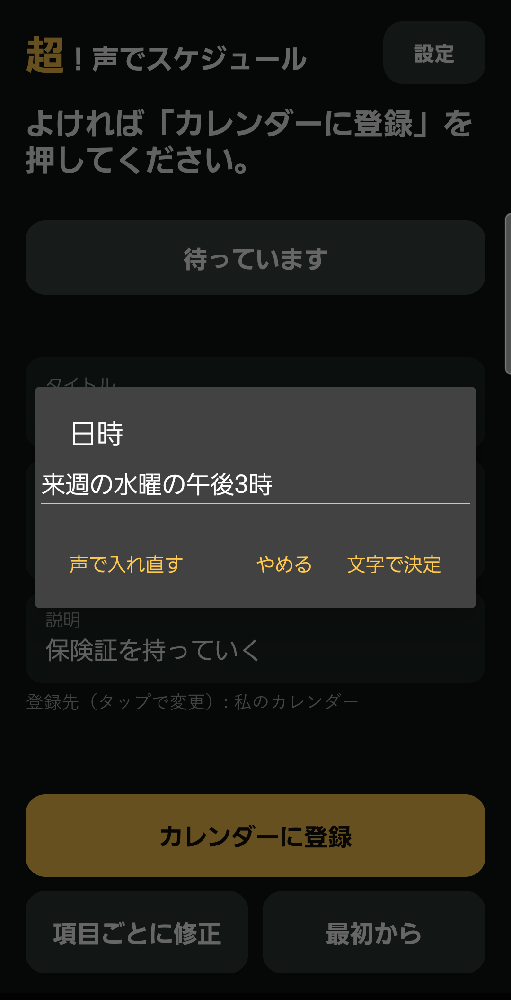
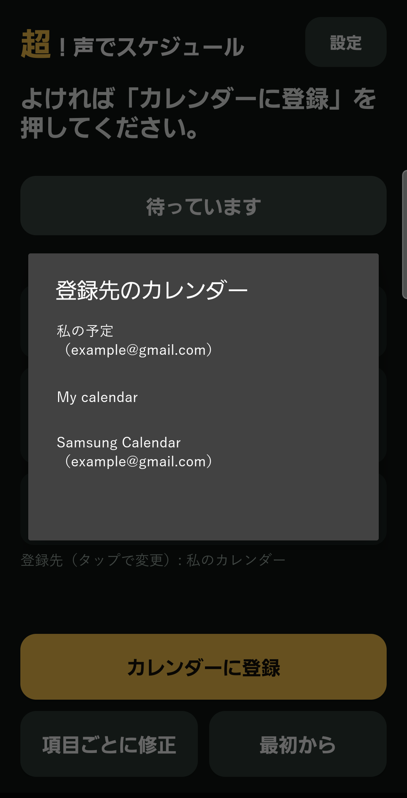
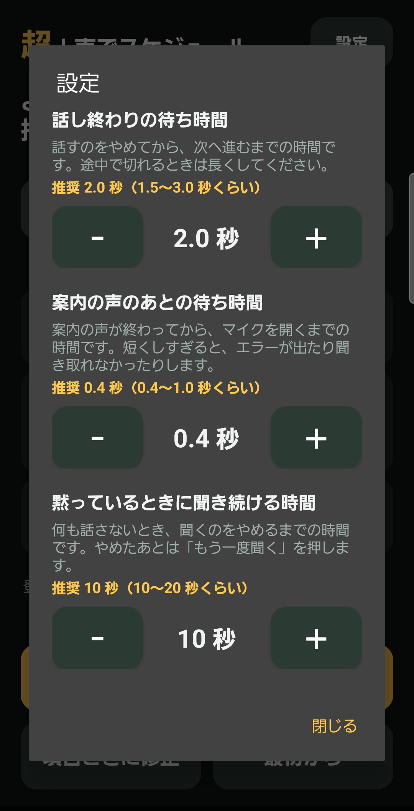

ホーム画面のアイコン
（アプリの版: Android 版 v8 2026-11-05 作成）
超！声でスケジュールは、スマホの声の案内に答えるだけで、予定を Google カレンダーなどに登録できるアプリです。


| 場所 | 何をするか |
|---|---|
| 一番上の文 | 今、聞かれていること |
| 色の帯 | 緑は話しています、赤は聞いています。話すのは赤のときです |
| タイトル・日時・説明の欄 | 聞き取った内容。タップすると直せます |
| 登録先 | 登録するカレンダー。タップすると変えられます |
| カレンダーに登録 | 今の内容で登録します |
| もう一度聞く／項目ごとに修正 | 聞き直します。全部入ったあとは、直す項目を選ぶボタンに変わります |
| 最初から／もう 1 件 | 入れ直します。登録のあとは「もう 1 件」に変わります |
| 設定 | 待ち時間を変えます（7 章） |
アプリを開くと、すぐに声の案内が始まります。帯が赤くなってから答えてください。



「登録しました」と言ったら完了です。続けて入れるときは「もう 1 件」を押します。
| 言葉 | 動き |
|---|---|
| キャンセル、中止、やめる | 入れた内容を消してやめます（修正の途中なら、修正だけやめます） |
| 戻る、ひとつ前 | 1 つ前の項目に戻ります |
| いいえ（「登録しますか？」のとき） | どこを直すか聞きます。「タイトル」「日にち」「説明」のどれかを答えます |
ふだんの言い方で話せます。
| こう言う | 入る日時 |
|---|---|
| あしたの午後3時 | あしたの 15 時から 1 時間 |
| 今日の夕方5時から6時半まで | 今日の 17 時から 18 時 30 分まで |
| 来週の水曜の午後3時から5時まで | 来週の水曜の 15 時から 17 時まで |
| 11月10日の15時30分 | 11 月 10 日の 15 時 30 分から 1 時間 |
| あさって午前10時半 | あさっての 10 時 30 分から 1 時間 |
| 3日後の午前11時 | 3 日後の 11 時から 1 時間 |
| あしたの午後3時から2時間 | あしたの 15 時から 17 時まで |
| 11月10日 | 11 月 10 日の終日（時間なし） |
| 12月30日から1月3日まで | 12 月 30 日から 1 月 3 日までの終日 |
| あしたは終日 | あしたの終日 |
全部入ったあとに「項目ごとに修正」を押して、直す項目を選びます。その項目だけ聞き直して、ほかはそのまま残ります。

タイトル・日時・説明の欄をタップすると、文字で直せます。「文字で決定」で決まり、「声で入れ直す」を押すと、その項目を声で聞き直します。

「登録先（タップで変更）」の行をタップすると、スマホに入っているカレンダーの一覧が出ます。選んだカレンダーは次回も使います。

右上の「設定」を押すと、3 つの時間を「−」「＋」で変えられます。

| 設定 | 何の時間か | 推奨 | 変えられる幅 |
|---|---|---|---|
| 話し終わりの待ち時間 | 話すのをやめてから、次へ進むまで。途中で切れるときは長くする | 2.0 秒 | 1.0〜5.0 秒 |
| 案内の声のあとの待ち時間 | 案内の声が終わってから、マイクを開くまで | 0.4 秒 | 0〜2.0 秒 |
| 黙っているときに聞き続ける時間 | 何も話さないとき、聞くのをやめるまで | 10 秒 | 5〜60 秒 |
話している途中で次へ進んでしまうときは、「話し終わりの待ち時間」を長くしてください。
| こんなとき | すること |
|---|---|
| 聞き取れなかった、と言われる | 「もう一度聞く」を押して、帯が赤くなってから話します |
| 話している途中で次へ進む | 設定の「話し終わりの待ち時間」を長くします |
| 「音声認識につながりません」と出る | インターネットにつながっているか確かめて、「もう一度聞く」を押します |
| 違う言葉で入った | 欄をタップして直すか、「項目ごとに修正」を使います |
| 日時が分からないと言われる | 「あしたの午後3時」のように、日と時間を続けて言います |
| マイクやカレンダーの許可を断ってしまった | 「最初から」を押すか、スマホの設定 → アプリ → 声でスケジュール → 権限 で許可します |
| 声の案内が出ない | スマホの音量と、スマホの読み上げの設定（日本語）を確かめます |
| 登録した予定が見えない | カレンダーのアプリで、登録先のカレンダーが表示になっているか確かめます。Google カレンダーに出るまで少しかかることがあります |